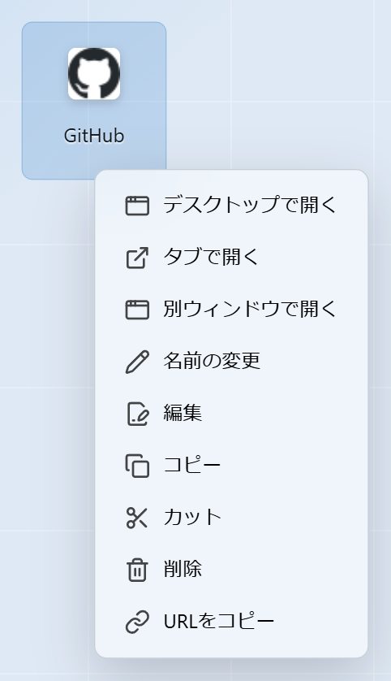
右クリックで、ぱっと操作
開く・名前を変える・複製・別の画面へ送る。よく使う操作はその場で。
Microsoft Edge / Chrome 拡張機能
よく使うサイトも、動画も、ちょっとしたメモも。 ぜんぶをひとつの画面に並べて、見たいものへワンクリックで。
データはすべて手元のブラウザの中。アカウント登録もいりません。
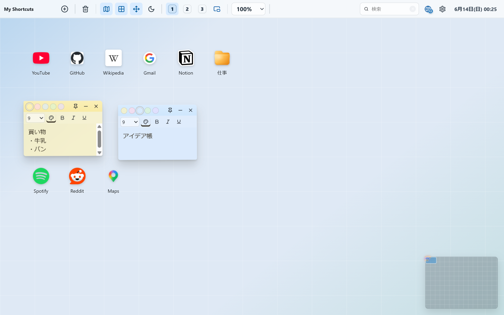
ナレーション音声: VOICEVOX：もち子さん
アイコンはドラッグするだけで、どこにでも。 使う順に並べたり、グループにまとめたり。 きれいに揃えたいときは、そっとマス目に吸い付きます。
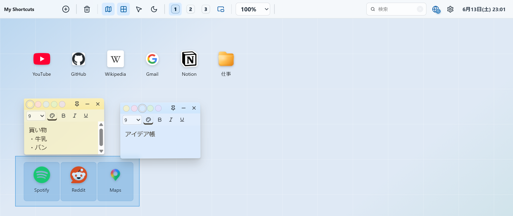
Web サイト、付箋、自作の小さなアプリ。 作りたいものを選んで置くだけ。 いま見ているページは、右クリックからそのまま送れます。
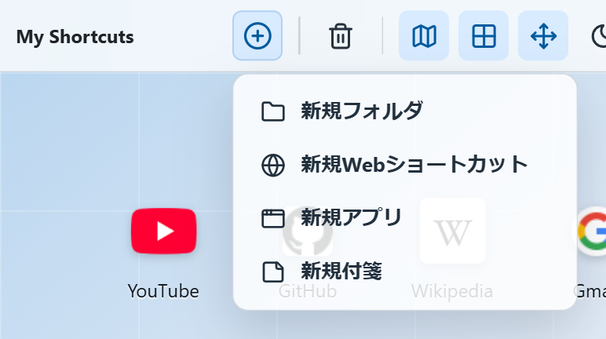
関係のあるものはフォルダにまとめて、必要なときだけ開く。 アイコン表示でも、一覧表示でも。 フォルダの中にフォルダも作れます。
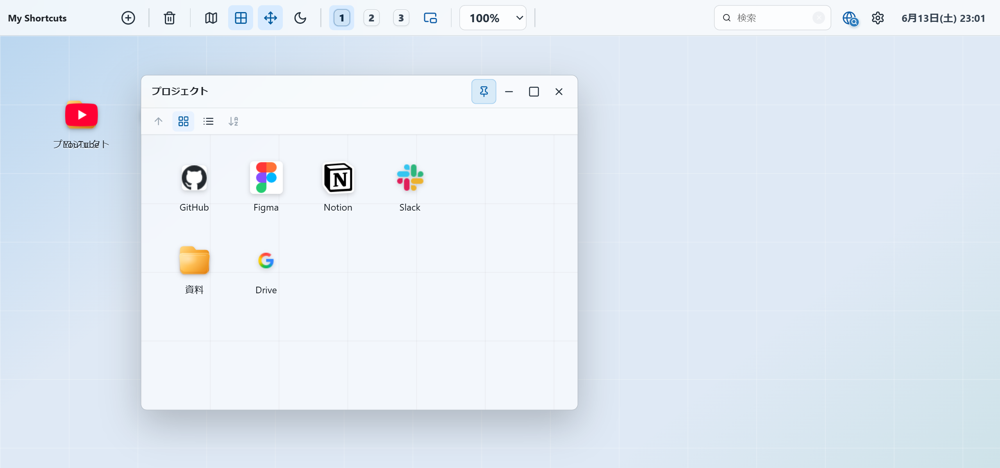
YouTube や Spotify のショートカットは、その場の小さなウィンドウで再生。タブを切り替えなくても、作業のとなりで流せます。続きはちゃんと覚えているので、また同じところから。
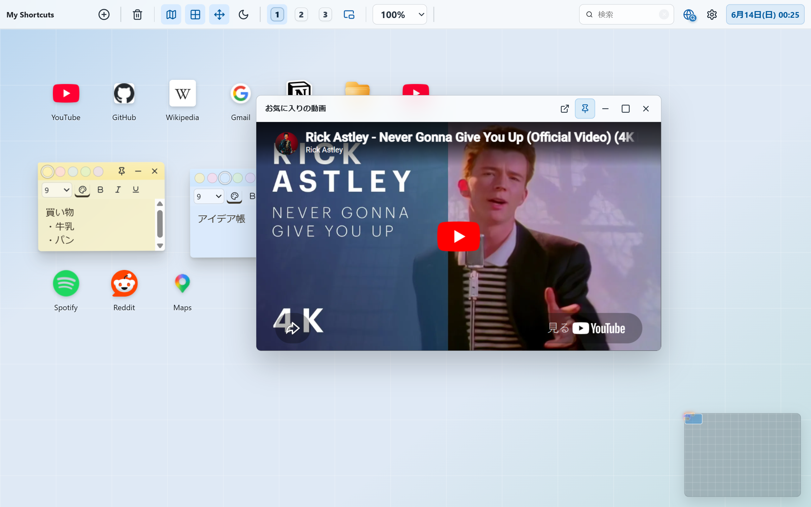
どこまで見たかを覚えているので、開けばその続きから。
画面ごと小さなウィンドウに切り出して、いつも手前に。ほかの作業をしながらでも。
いくつも開いて、好きな大きさで横に。自分だけの作業台に。
時計、電卓、ちょっとしたゲーム。 HTML で書いた小さなアプリを、そのままデスクトップのアイコンに。 ダブルクリックで、すぐ動きます。
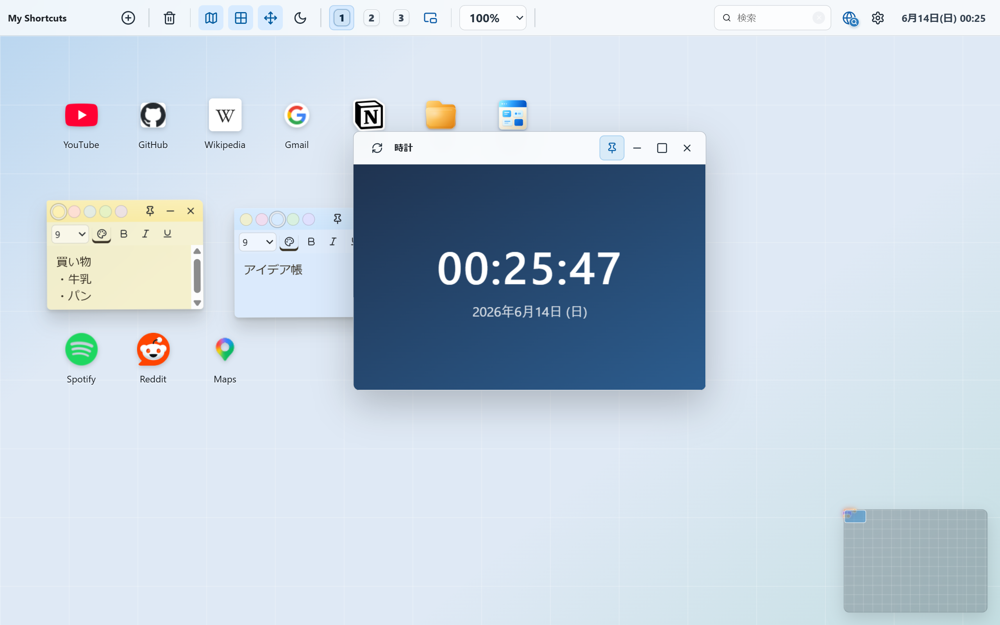
仕事用、趣味用、学習用。 画面をまるごと切り替えて、いまやることだけに集中。 混ざらないから、頭の中もすっきり。
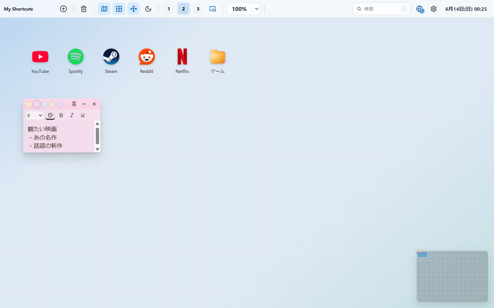
上のバーから、今日の予定をさっと確認。 ちょっとした予定はその場で書き込めます。 手元のカレンダーファイルから読み込むこともできます。
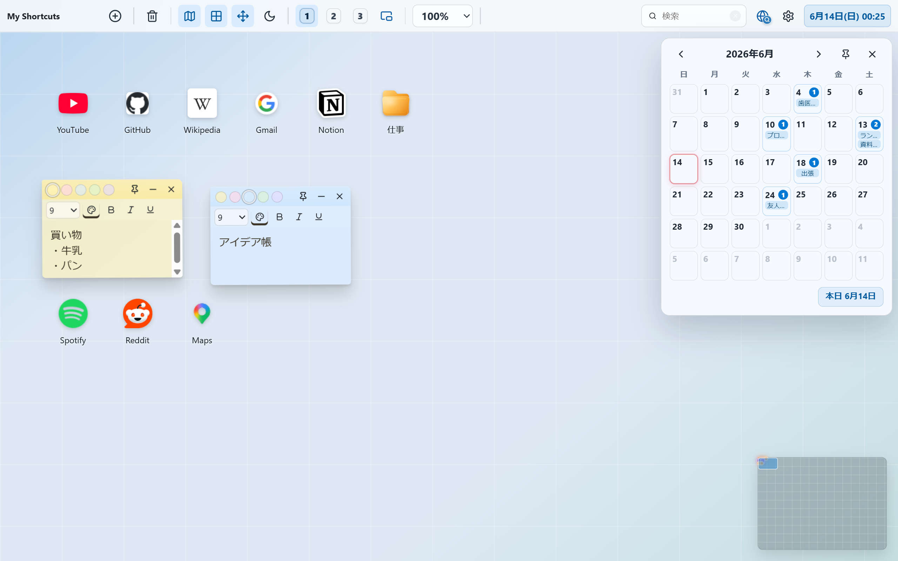
名前を打てば、目当てのアイコンだけがすっと残ります。 Web をそのまま調べたいときは、検索ウィンドウから。 いつもの検索エンジンを選んでおけます。
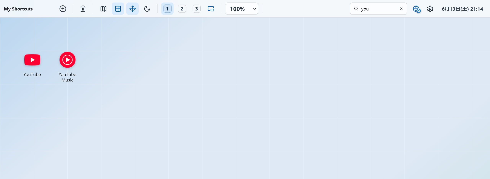
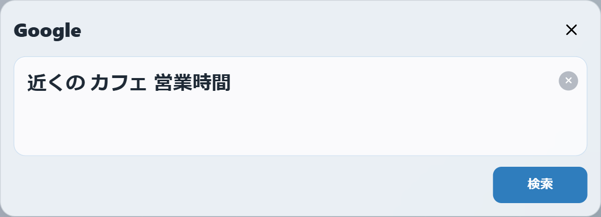
毎日のことだから、小さな使い心地まで。

開く・名前を変える・複製・別の画面へ送る。よく使う操作はその場で。
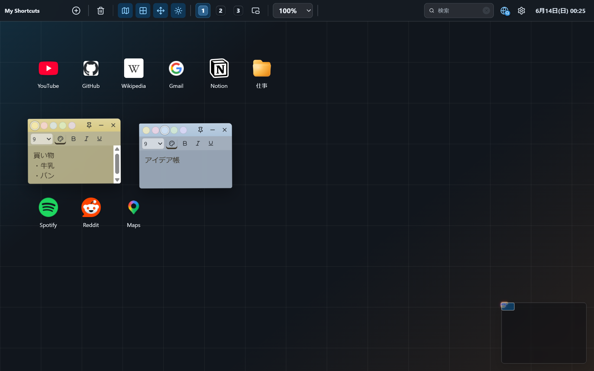
時間帯や気分に合わせて、目にやさしい見た目へ。
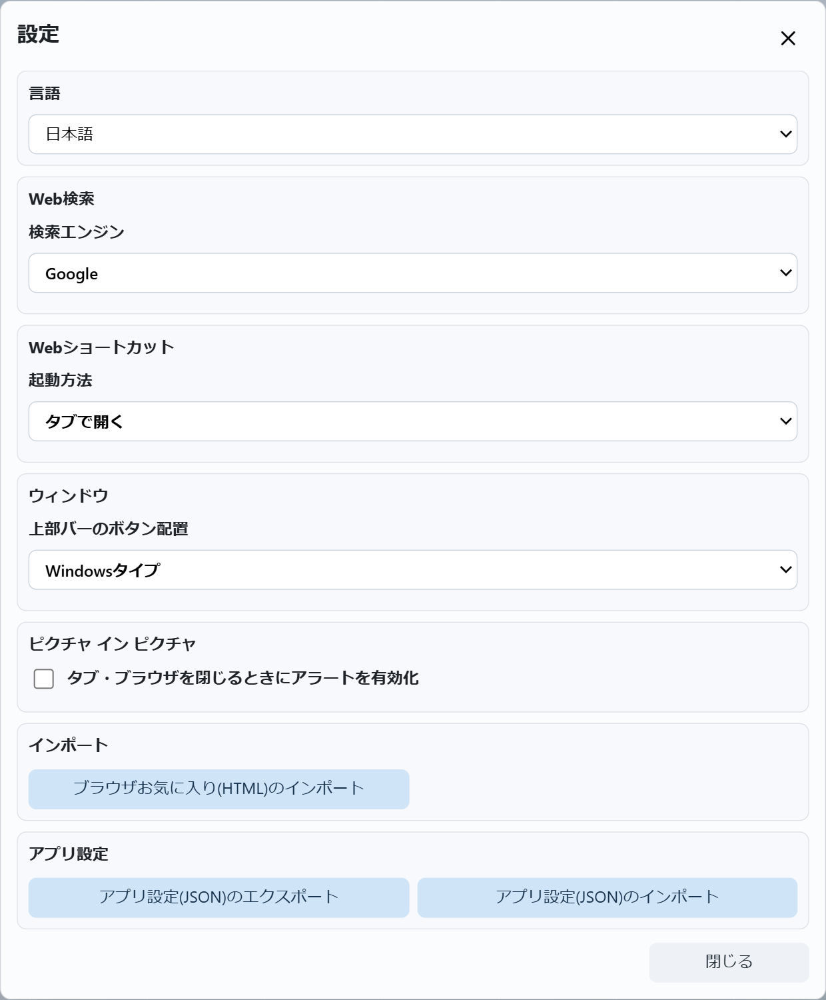
並べたものは1つのファイルに書き出し。別のPCへもそのまま。多言語にも対応。
並べたサイトもメモも、保存先はこのブラウザの中だけ。 どこかに送られることはありません。アカウントもログインも不要です。
Microsoft Edge と Chrome に対応。無料で使えます。
アイコンを押すだけで、いつでもあなたのデスクトップが開きます。
かんたんな手順で、すぐに使い始められます。
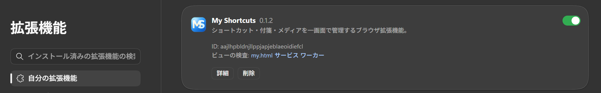
パズルのアイコンを開き、My Shortcuts のピンを押すと、アイコンが常に表示されてワンクリックで開けます。
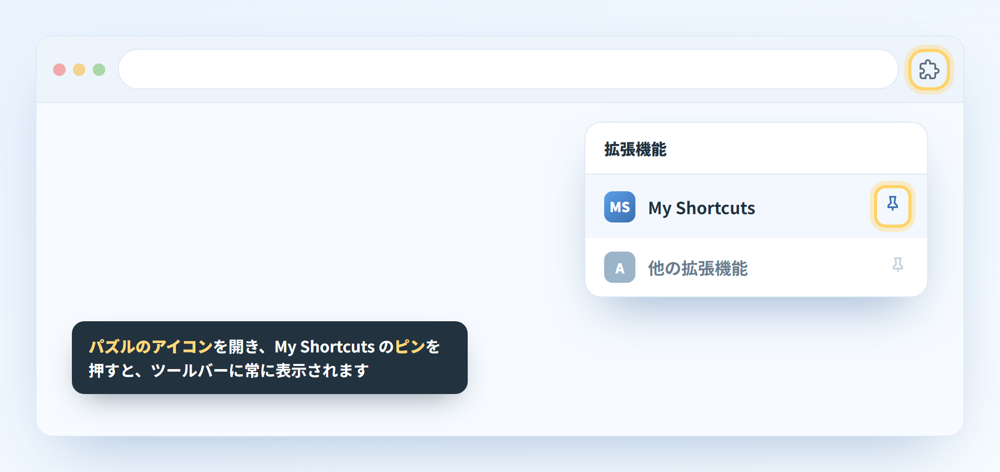
ツールバーの My Shortcuts アイコンをクリックすると、あなたのデスクトップが新しいタブで開きます。
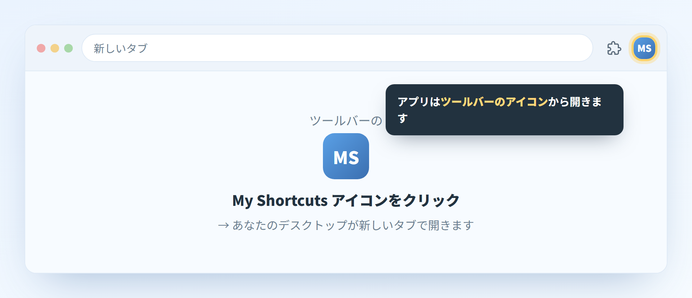
アプリを開いた状態でアドレスバーの☆（または Ctrl + D）を押すと、お気に入りからも開けます。
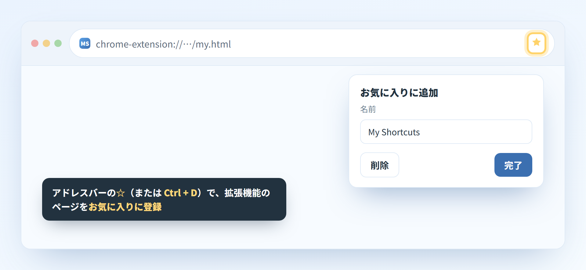
設定の「起動時」で「特定のページを開く」に拡張機能ページを追加すると、ブラウザを開くたびに最初に表示されます。
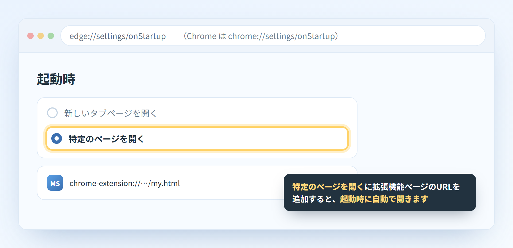